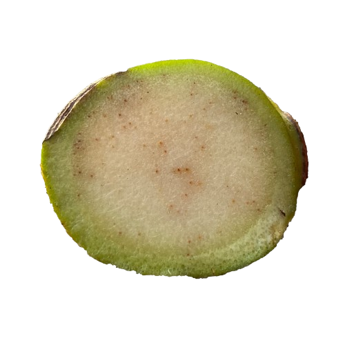

About Me
Hello! I'm MJ M. Enriquez, a passionate Software Developer with a keen interest in building innovative and user-friendly applications. My journey in software development began with a curiosity for how things work and a drive to create solutions that make a difference. I specialize in web technologies and enjoy bringing ideas to life through clean and efficient code. I'm always eager to learn new technologies and improve my skills to deliver high-quality software.
Application Development
Able to build functional and responsive application using Flutter and Firebase with basic database operations.
UI/UX Design
Designed user-friendly interfaces using Bootstrap 4, HTML, and CSS for better accessibility and user experience.
Image Processing
Applied Python to process images for image detection.
Database Integration
Used Firebase and MySQL to connect the systems with databases for storing and managing user or system data.
Resume
Education
2015-2021
Lupon Vocational High School
Information and Communication Technology - Computer Systems Servicing
2021-2025
Davao Oriental State University - DOrSU
Bachelor of Science in Information Technology
Work Experiences
Directorate for Information, Communication, and Technology
IT Internship (February 2025 - May 2025)
- Quantified - Successfully performed data entry for over 2,000 students to create institutional email accounts. Catered an average of 15 student inquiries to their institutional email accounts per day.
- Unquantified - Performed software QA testing for the DoRSU Student Portal and ISMS, ensuring system functionality and reliability. Assisted the first and second phase of Institutional Enrollment System Training for Faculties and Staffs of DOrSU.
Project Experiences
DoRSU: Student Volunteer Directory System
- Technologies: Netbeans, Java, MySQL, Java Derby.
- Built a simple object-oriented concept project for NSTP volunteers.
- Used MySQL for relational database.
- Implemented CRUD features using Java and MySQL queries.
BanaScan: Bugtok Disease (Ralstonia solanacearum) Detection in Cardava and Saba Bananas using Deep Learning and GIS Mapping
Detection in Cardava and Saba Bananas using Deep Learning and GIS Mapping
- Technologies: Dart, NoSQL, Python, SQLite
- Built an application system for farmers to proactively monitor and manage Bugtok disease in Cardava/Saba banana farms.
- Used Python for image processing to identify the infected peduncles.
- Used a NoSQL platform (Firebase) for storing data through online.
- Used SQLite for storing data even offline.
- Included image uploads and interactive map visualization.
- Used heatmap to point the infected areas in map.
Portfolio

BanaScan
Developed a user-friendly mobile application for farmers to proactively monitor and manage Bugtok disease in Cardava/Saba banana farms.
Project Link →
Flutter
Application
Python
Firebase
Dart
Image Processing